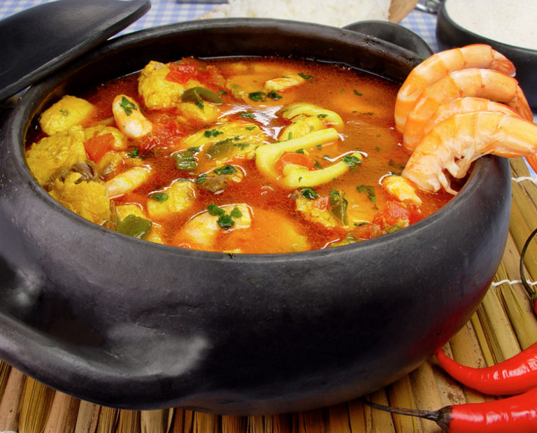
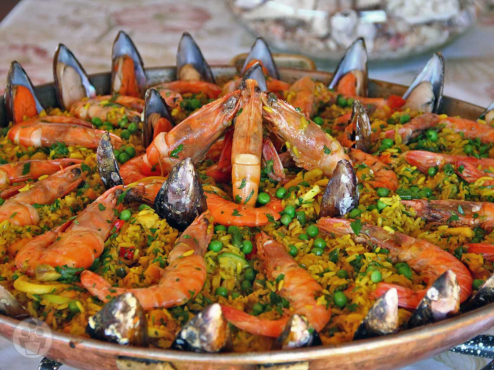
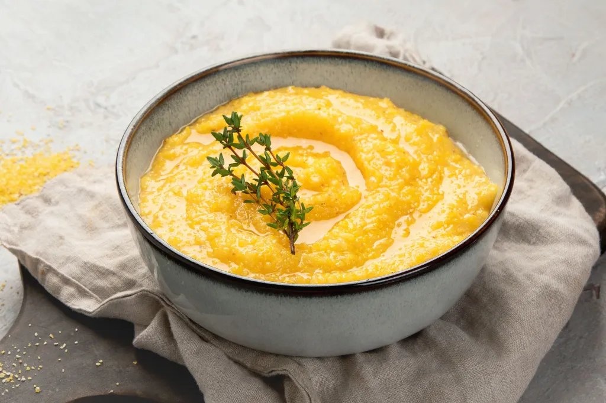
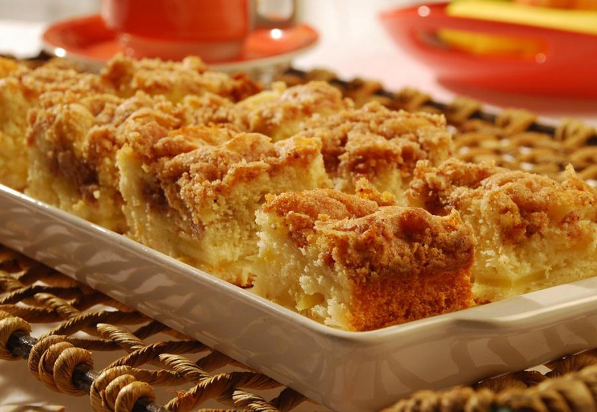

O modo de preparo da caldeirada de frutos do mar envolve um cozimento em camadas, garantindo que cada ingrediente atinja o ponto ideal sem passar do ponto ou desmanchar. O passo a passo geral é o seguinte:
. Preparo Inicial
Limpeza e Tempero: Limpe todos os frutos do mar (polvo, lula, camarão, peixe, mexilhão). Tempere-os individualmente com sal, pimenta, e suco de limão. Se desejar, cozinhe o polvo e a lula previamente na panela de pressão por um curto período para acelerar o processo, picando-os depois.
Preparo do Caldo (Opcional): Para um sabor mais intenso, prepare um caldo base (fumet) usando as cascas e cabeças dos camarões ou aparas do peixe, cozinhando com legumes e vinho branco. Coe e reserve.
2. O Refogado (Base do Molho)
Em uma panela grande (de preferência de barro, se disponível), aqueça o azeite de oliva ou azeite de dendê.
Adicione e refogue a cebola picada ou em rodelas até murchar.
Acrescente o alho picado e a pimenta de cheiro picadinha (se usar), refogando por mais um minuto.
Junte os pimentões coloridos picados ou em rodelas e os tomates picados ou pelados processados. Refogue até que os legumes comecem a desmanchar e formar a base do molho.
Adicione temperos secos como colorau, páprica, pimenta do reino, cominho e folhas de louro. Misture bem para liberar os aromas.
3. Cozimento Gradual
Adição de Líquido: Despeje o vinho branco e deixe evaporar o álcool. Em seguida, adicione o caldo de peixe/camarão reservado ou água quente suficiente para cobrir os ingredientes que serão adicionados. Deixe ferver.
Camadas de Ingredientes: O segredo da caldeirada é o tempo de cozimento diferente de cada fruto do mar:
Adicione o peixe em postas primeiro, pois leva um pouco mais de tempo. Cozinhe por cerca de 10 minutos.
Em seguida, adicione os anéis de lula e os mexilhões (se não estiverem pré-cozidos). Cozinhe por mais alguns minutos.
Acrescente o polvo (se já estiver cozido) e a lagosta (se usar), cozinhando por mais 5-10 minutos.
Por último, adicione os camarões limpos, pois cozinham muito rapidamente. Cozinhe por apenas 2 a 3 minutos, até ficarem rosados.
4. Finalização
Toque Final: Adicione o leite de coco para dar cremosidade e sabor, e acerte o ponto do sal e da pimenta.
Aromas: Desligue o fogo e finalize com uma generosa porção de coentro e salsinha (cheiro-verde) picados por cima.
5. Servir
Sirva imediatamente, bem quente, acompanhado de arroz branco, pirão ou pão para mergulhar no molho delicioso.
Dissolver o Fubá a Frio (Truque para não empelotar): Em uma tigela separada, misture o fubá com cerca de 1 xícara de água fria até formar uma pasta homogênea. Isso evita que a polenta forme grumos quando adicionada à água quente.
Ferver o Líquido: Em uma panela grande e de fundo grosso, leve o restante da água (ou caldo) e o sal para ferver.
Adicionar o Fubá: Quando a água ferver, abaixe o fogo e despeje a mistura de fubá dissolvido lentamente, em fio, mexendo vigorosamente com um batedor de arame (fouet) ou colher de pau para incorporar.
Cozinhar e Mexer: Continue cozinhando em fogo baixo, mexendo sempre para evitar que a polenta grude no fundo da panela. O tempo de cozimento varia dependendo do tipo de fubá:
Fubá pré-cozido/instantâneo: Cerca de 5 a 10 minutos.
Fubá tradicional (moagem média/grossa): Pode levar de 30 a 60 minutos ou mais, exigindo paciência e mexidas frequentes.
Ponto e Finalização: A polenta estará pronta quando atingir a consistência desejada (cremosa, como um purê espesso, ou mais firme) e soltar do fundo da panela. Desligue o fogo e, se desejar, incorpore a manteiga e o queijo parmesão ralado, mexendo até derreter e ficar cremoso.
Servir: Sirva imediatamente como acompanhamento de molhos ricos (como ragu de linguiça ou carne), frango, ou carnes assadas.
Dica Regional: Polenta Firme para Grelhar
Para a versão firme, comum no Sul do Brasil, despeje a polenta quente em uma forma ou tábua de madeira (spianatora) e deixe esfriar completamente até solidificar. Corte em fatias ou quadrados e grelhe ou frite em azeite ou manteiga até formar uma crosta crocante.
Pré-aqueça o Forno: Preaqueça o forno a 180°C. Unte e enfarinhe uma forma retangular média (aprox. 20cm x 30cm).
Prepare a Farofa: Em uma tigela média, misture a farinha, o açúcar e a canela (se usar). Adicione a manteiga gelada em cubos. Com as pontas dos dedos, esfregue a manteiga nos ingredientes secos até obter uma mistura esfarelada e crocante, semelhante a uma farofa grossa. Reserve.
Prepare a Massa: Em uma tigela grande, bata a manteiga com o açúcar até formar um creme claro. Adicione os ovos, um de cada vez, batendo bem após cada adição. Acrescente a essência de baunilha.
Alterne Secos e Líquidos: Adicione a farinha de trigo e o sal alternadamente com o leite morno, misturando delicadamente até a massa ficar homogênea. Por último, incorpore o fermento em pó, misturando suavemente.
Montagem: Despeje a massa na forma untada e espalhe uniformemente com uma espátula.
Adicione o Recheio: Distribua o recheio escolhido sobre a massa:
Banana: Arrume as rodelas de banana sobre a massa.
Coco: Espalhe a mistura de coco com leite condensado por cima.
Finalize com a Farofa: Cubra toda a superfície do recheio com a farofa reservada, garantindo uma camada uniforme.
Asse: Leve ao forno preaquecido por aproximadamente 40 a 50 minutos, ou até que a farofa esteja dourada e, ao inserir um palito na massa, ele saia limpo.
Sirva: Retire do forno e deixe esfriar um pouco antes de cortar em quadrados. A cuca é deliciosa servida morna ou em temperatura ambiente, ideal para acompanhar um café ou chá.
Prepare a Massa: Em uma tigela grande, misture todos os ingredientes secos: a farinha de trigo, o açúcar, o sal e o fermento.
Adicione os Líquidos: Acrescente o ovo, o óleo (ou manteiga), o vinagre/cachaça e o leite aos poucos. Misture e, se necessário, use as mãos para amassar a massa até que fique lisa, homogênea e pare de grudar nas mãos. A quantidade de leite pode variar ligeiramente.
Abra a Massa: Em uma superfície enfarinhada, utilize um rolo para abrir a massa em uma espessura fina (cerca de 2 a 3 mm).
Corte e Modele: Corte a massa aberta em tiras largas ou retângulos. Faça um pequeno corte no centro de cada pedaço. Passe uma das pontas do retângulo por dentro do corte, "virando" a massa para criar o formato característico do cavaquinho ou "cueca virada".
Frite: Aqueça o óleo em uma panela funda ou frigideira em fogo médio-alto. Frite os pedaços de massa virada em pequenas quantidades por vez até que fiquem bem dourados e crocantes.
Escorra e Finalize: Retire os cavaquinhos fritos com uma escumadeira e coloque-os sobre papel toalha para escorrer o excesso de óleo.
Polvilhe: Imediatamente após escorrer, passe os doces ainda quentes em um recipiente com a mistura de açúcar e canela.
2-prato:Sequencia de Camarão
O "modo de preparo" da sequência de camarão na verdade envolve a execução de várias receitas distintas, que compõem o prato completo. Abaixo estão os modos de preparo simplificados para os principais itens que geralmente compõem a sequência:
Limpeza e Tempero: Descasque e limpe os camarões (retire a veia), deixando o rabo para facilitar o manuseio. Tempere com sal, pimenta do reino e limão.
Empanamento: Prepare três recipientes: um com farinha de trigo, outro com ovos batidos e o terceiro com farinha de rosca ou Panko.
Fritura: Passe cada camarão na farinha de trigo, depois no ovo e, por último, na farinha de rosca. Frite em óleo quente por imersão por cerca de 1 a 2 minutos, até ficarem dourados e crocantes. Escorra em papel toalha.
3-prato:Polenta Italia
O modo de preparo da polenta em Santa Catarina segue a tradição dos imigrantes italianos, resultando em um prato versátil que pode ser cremoso ou firme. O segredo está na proporção correta de ingredientes e no mexer constante para evitar grumos.
4-Sobremesa:Cuca (bolo)
A cuca é um bolo de origem alemã que se popularizou e ganhou características próprias na região Sul do Brasil, especialmente em Santa Catarina e no Rio Grande do Sul. O diferencial é a textura fofa da massa e a farofa crocante que a cobre.
4-Sobremesa:Cavaquinho
O modo de preparo do cavaquinho (ou cueca virada/orelha de gato) é relativamente simples, envolvendo a preparação de uma massa que lembra a de pão ou biscoito, que é depois frita.